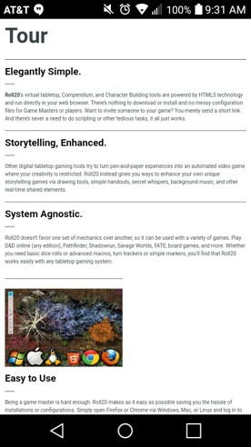
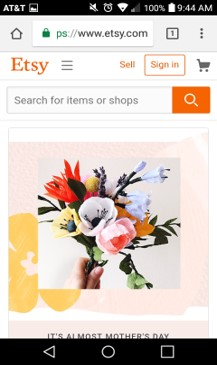
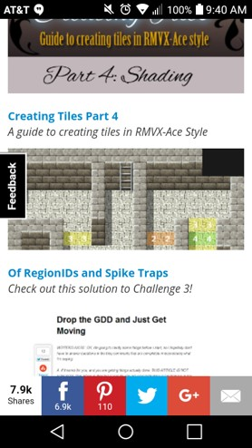

Alignment
Roll20
See Site
I feel like this website's layout is pretty straight forward. It's all justified. However, in this case that works. It makes it easy to find what you are currently looking for. The titles are easy to search and easy to head into once you find what you need. Which for a website like roll20 which does store lots of information for Dungeons and Dragons, it is nice to have it so easily accesible.
Proximity
Etsy
See Site
I feel like Etsy did a wonderful job of embodying proximity. They align their pictures and background, allow the appropriate amount of space as well as content. It is very clean cut and a wonderfully finished product, it makes the page flow nicely from point a to point b.
Typography
RPG Maker
See Site
RPG maker uses typography in a very different way then most sites. Most seem to pick subtle and similar fonts, where as RPG makes uses them to set their site apart. The titles of each major section give you an idea of easing you into the idea, where as the next title is more firm, this is where it gets serious. We will guide you in, but this is how you do it.